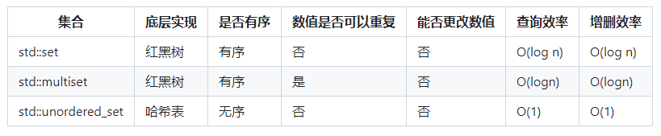
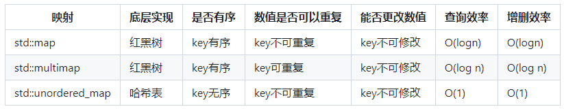
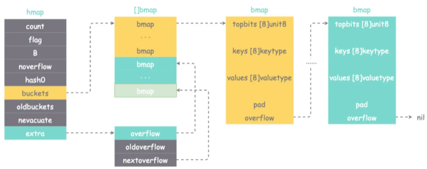

Go数据结构
1. Slice和数组
新建数组必须指定长度，而且长度不可修改。所以在go中一般使用的是更具有灵活性的切片
nil切片和空切片？
slice的底层数据结构是一个结构体，包含len，capacity和一个指向数组的pointer。nil在go中引用类型数据结构的零值（pointer、channel、func、interface、map或slice）。因此nil切片和空切片的本质区别在于，切片的pointer是否为nil。 var s [] slice是nil切片，s := []int 和 s := make([]int,0)是空切片 总结： - nil切片的长度和容量都是0，空切片的长度为0，容量由指向的底层数组决定
- 空切片 != nil切片
- nil切片的ptr指针是nil，而空切片的ptr指针指向底层数组的地址
- nil切片也切片，具有和普通切片相同的行为，所以nil切片具有切片同样的行为操作 - 在判断切片是否为空时不能使用nil作为判断标准，应该使用len = 0作为标准
slice扩容
切片使用runtime/slice.go 包下的growslice()方法进行扩容 如果当前切片的容量小于 1024,那么新切片的容量翻倍；
如果当前切片的容量大于 1024,那么新切片的容量每次增加25% 实际操作时还会根据结构体的情况进行内存对齐 1
2
3
4
5
6
7
8
9
10
11
12
13
14
15
16
17newcap := old.cap
doublecap := newcap + newcap
if cap > doublecap {
newcap = cap
} else {
if old.cap < 1024 {
newcap = doublecap // * 2
} else {
for 0 < newcap && newcap < cap { // 25%
newcap += newcap / 4
}
if newcap <= 0 {
newcap = cap
}
}
}
当slice容量不足时，会根据切片元素的大小和新容量计算内存，将超出切片长度的内存清空，并拷贝旧切片的内存数据到新申请的内存中（这意味着底层的数组指针发生了改变），最后返回
切片作为参数传递
理解了切片的数据结构就不难理解这个问题，当切片作为参数传递时，其实只是传了一个实参的拷贝，实参和形参的地址不同，但切片的pointer是相同的。
即slice有两个，地址不同，但是数据结构中的pointer是一样的，其他一个slice修改变量会导致另一个slice同步修改 如果触发了扩容机制，会返回一个新pointer，此时进行修改则不再同步 如果想要扩容后仍然同步，则需要在传参时传递切片的pointer 注意：理解这一点非常重要，不然可能在函数运行时引发不知名bug
内存逃逸问题
Go的内存分配有栈（stack）和堆（heap）两种
内存逃逸的本质是内存被分配到了堆上 。堆内存的分配不如栈内存快，且需要gc进行内存回收。 由于Slice底层还是一个指针，当指针类型作为返回时，会发生内存逃逸
Golang的逃逸分析的基本原则是：如果函数返回了变量的引用，那么这个变量就会逃逸。 编译器可以通过分析代码，决定变量分配的地方： - 如果变量在函数外没有被引用，那么优先分配在栈（stack）上 栈的分配速度快，只需要CPU的两个指令“PUSH”和“RELEASE“进行分配和释放。 - 如果变量在函数外被引用，那么优先分配在堆（heap）上，没有在函数外被引用也可能分配在堆上，比如当变量过大时（Go栈的最大值为64位下1G，32位下250M） 堆的分配速度较慢，首先需要找到一块大小合适的内存块，还需要gc垃圾回收才能释放。
常见的内存逃逸情况： （1）函数内将局部变量指针返回，被外部引用，其生命周期大于栈，溢出 1
2
3
4
5
6
7
8
9
10
11type User struct {}
func NewUser() *User{
user := User{}
return &user
}
func main() {
_ = NewUser()
}
（2）对象太大，超过栈帧大小 1
2
3
4func main() {
_ = make([]int, 0, 1000)
_ = make([]int, 0, 10000)
}
（3）闭包引用逃逸 1
2
3
4
5
6
7func Fibonacci() func() int {
a, b := 0, 1
return func() int {
a, b = b, a+b
return a
}
}Fibonacci()函数中，a,b是一个本地的变量，因为被闭包引用，所以被分配在了堆上。
（4）动态类型逃逸 1
2
3
4func main() {
a := 1
fmt.Println("a逃逸，a:", a)
}fmt.Println函数参数类型是interface{}，在 interface 类型上调用方法都是动态调度的，即方法的真正实现只能在运行时知道
（5）slice，map和channel的指针引用 1
2
3
4
5
6
7
8
9
10
11
12
13package main
func main() {
a := make([]*int, 1)
b := 12
a[0] = &b
c := make(map[string]*int)
d := 14
c["aaa"] = &d
e := make(chan *int, 1)
f := 15
e <- &f
}b,d,f的内存都被移动到堆上，因为在Golang中，slice，map，channel引用指针的变量，一定会逃逸。 这是在Golang中，slice，map，channel对指针的引用性能低的根本原因
总的来说： 栈内存的分配和回收是非常快速的，只需要2条CPU指令,PUSH 和 RELEASE。而堆内存，分配需要找到合适大小的内存块，回收则是通过GC。因此，通过内存的逃逸分析，可以尝试将不必要分配在堆上的变量分配在栈上，减少分配堆内存的开销和GC的压力。
启示： 1. 对于性能要求比较高且访问频次比较高的函数调用，应该尽量避免使用接口类型 2. 不要盲目使用变量指针作为参数，虽然减少了复制，但变量逃逸的开销更大 3. 预先设定好slice长度，避免频繁超出容量，重新分配
copy的使用
在完成leetcode77.组合问题时出现的情况： 1. 使用slice作为一种全局的参考，必须使用深拷贝，否则后面修改了，前面添加进ans的结果也都会修改。 2. 使用copy( destSlice, srcSlice []T) int时，必须提前把长度开辟好，copy过程不会自动扩容 1
2
3
4
5
6
7
8
9
10
11
12
13
14
15
16
17
18
19
20func combine(n int, k int) [][]int {
ans := make([][]int,0)
tmp := make([]int,0)
var backtrack func(n int,k int,level int)
backtrack = func(n int,k int,level int){
if k == len(tmp){
t := make([]int,k) //必须提前指定大小为k，因为在copy时不会自动扩容
copy(t,tmp) //如果没有深拷贝，会存在所有答案都相同的问题
ans = append(ans,t)
return
}
for i:=level;i <= n;i++{
tmp = append(tmp,i)
backtrack(n,k,i+1)
tmp = tmp[:len(tmp)-1]
}
}
backtrack(n,k,1)
return ans
}
参考资料
Golang | 深入理解数据结构之Slice - 掘金 (juejin.cn)
2. 链表
链表的知识没有切片那么繁琐，只要能随手手撕结构体+配套方法即可（可参见leetcode 707）。 go中自带的链表结构体定义在container/list/list.go中。 list本身是一个结构体，每个节点（element）也是一个结构体。 1
2
3
4
5
6
7
8
9
10
11// Element is an element of a linked list.
type Element struct {
// Next and previous pointers in the doubly-linked list of elements.
// To simplify the implementation, internally a list l is implemented // as a ring, such that &l.root is both the next element of the last // list element (l.Back()) and the previous element of the first list // element (l.Front()). next, prev *Element
// The list to which this element belongs.
list *List
// The value stored with this element.
Value any
}
1 | |
go中的list是一个双向链表，下面是两种初始化方式 1
2
3
4
5
6
7
8
9
10
11
12
13
14
15
16
17
18
19
20package main
import (
"container/list"
"fmt"
)
func main()
// 使用list.New()直接初始化
l1 := list.New()
l1.PushFront(1)
fmt.Println(l1.Front().Value) // 1
// 使用list.List{}延迟初始化
l2 := list.List{}
l2.PushFront(2)
fmt.Println(l2.Front().Value) // 2
}
go链表包含哨兵节点，哨兵节点的两个指针next和prev分别指向第一个节点和最后一个节点，不保存其他有效数值。因此go的链表也可以当成栈和队列来使用。
3. 哈希表
哈希是非常常见的数据结构，在C语言中有多种实现方式：  
哈希表底层基于数组实现，哈希函数的选择在很大程度上能够决定哈希表的读写性能 ，当发生哈希冲突时，哈希表的读写性能通常会下降到O(logN)甚至O(N)级别。 可以总结出影响哈希表性能的一些因素: - 哈希函数是否完美，是否能够尽量减少哈希冲突的发生 - 当哈希冲突发生时，如何解决哈希冲突 - 哈希表底层基于数组实现，当数组接近被填满时，发生哈希冲突的概率会大大增大，因此需要对数组做扩容。如何选择合适的扩容阈值并且如何做数组扩容也会影响哈希表的性能与稳定性
go map初始化： 1
myMap := make(map[int]int, 0)
map的遍历
在使用go range遍历map时： - key是乱序的 - 每个key value使用的内存相同，每次将不同的key value值拷贝到那块内存中 - 遍历时，如果一个元素还没有被访问到就被删除或者新增了一个元素，该元素不会被访问到 - 被遍历的map是原map的copy，但共用同一片底层内存。在遍历过程中对此map元素的修改将体现到循环变量中
map的key值不能是func()，map和Slice，但可以是channel。因为channel创建后指针是不会再发生变化的，slice、map、func()可能会发生变化
如果将interface{}作为key，但是传入func()，则会抛出runtime.panic
源码结构
map运行中主要使用 runtime/map.go中的hmap来表示： 1
2
3
4
5
6
7
8
9
10
11
12
13
14
15
16
17
18
19
20
21
22
23
24
25
26
27
28
29
30
31
32
33
34
35
36
37
38
39
40
41
//hmap的结构体
type hmap struct {
count int // 当前哈希表中的元素数量
flags uint8 // 扩容标志位
B uint8 // 哈希表中桶的数量为2的B次方
noverflow uint16 // 记录溢出桶的大致数量 当溢出桶的数量不多时，值为精确值当;溢出桶的数量过多时， 为大致值
hash0 uint32 // hash种子
buckets unsafe.Pointer // 容量为2^B的桶数组，存储具体 key/value 的 bucket 数组，里面每个 bucket 本质也是指向结构体的一个指针，其指向的结构体是 bmap
oldbuckets unsafe.Pointer // 扩容时保存旧的桶
nevacuate uintptr // 用于记录数据转移的进度，低于此值的数据已经从旧桶转移到了新桶中
extra *mapextra // 溢出桶
}
//溢出桶
type mapextra struct {
overflow *[]*bmap // 溢出桶
oldoverflow *[]*bmap // 旧的溢出桶
nextOverflow *bmap // 指向空闲溢出桶的指针
}
// 源代码中的bmap，但不是实际运行的样子
type bmap struct {
tophash [bucketCnt]uint8
}
// bmap在编译时计算大小，使用反射机制构成真正的bmap类型
type bmap struct {
tophash [bucketCnt]uint8 //存放了Hash值的前8位，用于插入时候的快速比较等场景
keys [bucketCnt]keyType
values [bucketCnt]valueType
pad uintptr
overflowPtr uintptr
}

代码太晦涩，看着图更容易理解，buckets是一个指向bmap指针数组的指针，每个bmap指针指向一个bmap结构体。bmap结构体内部包含key数组和value数组（分开存储而不是成对存储可以有效减少填充，节约内存）。 1
2
3例如，有这样一个类型的 map：`map[int64]int8`，如果按照 `key/value...` 这样的模式存储，那在每一个 key/value 对之后都要额外 padding 7 个字节
而将所有的 key，value 分别绑定到一起，这种形式 `key/key/.../value/value/...`，则只需要在最后添加 padding即可。
一个bmap能存储8个k-v对，超过的部分会创建新的桶并通过overflow串联起来（拉链法）。
问题：既然bmap有了overflow串联溢出的桶，为什么还需要extra来保存溢出桶的指针？ 答案：这是一种优化。当map的key和val均不含指针并且可以内联(size < 128字节)时，bmap可以被标注为不包含指针，这样可以避免GC时扫描整个map（扫描所有的bmap）。但是因为bmap本身就包含了一个指向溢出桶的指针overflow，因此hmap才增加了extra字段，用来保存溢出桶信息，这样如果bmap不包含指针(除了overflow指针)，那么GC扫描时只需要扫描extra字段中的溢出桶而不用扫描整个map
key的定位
go map的hash函数其实就是取余（但取余很慢，所以位运算代替）。
key经过hash得到的hash值总共有64个bit位： 1
2
3
4
5
610010111 | 000011110110110010001111001010100010010110010101010 │ 01010
- 取后B个Bit位作为要存放的桶编号，例如上面的01010，就是10号桶
- 再用Hash值的高8位，找到Key在桶内部的位置，这是在寻找已有的key
假定 B = 5，所以 bucket 总数就是 2^5 = 32。首先计算出待查找 key 的哈希，使用低 5 位 `01010`，找到对应的 8 号 bucket，使用高 8 位 `10010111`，对应十进制 151，在 8 号 bucket 中寻找 tophash 值（HOB hash）为 151 的 key，找到了 2 号槽位，这样整个查找过程就结束了。
如果在 bucket 中没找到，并且 overflow 不为空，还要继续去 overflow bucket 中寻找，直到找到或是所有的 key 槽位都找遍了，包括所有的 overflow bucket。
hash函数
hash函数是在初始化时根据CPU确认的，默认AES。如果不支持AES，则使用mem hash
map的访问
map的访问即通过给定的key在map中寻找其对应value，它的大致步骤如下： 1. 以64位操作系统为例，原始的key通过Hash函数映射成64位二进制。 2. 末尾B位对应bmap的位置，从[]bmap中找到对应的bmap。 3. 首8位对应该key的tophash，从步骤2所定位的bmap开始检索。首先会比较bmap顶层的tophash与原始key的tophash是否相同，若不相同则直接跳过比较下一个；若相同则进一步比较key是否相同。 4. 若当前的bmap中比较完，没有匹配到目标key，且overflow不为空，则继续从overflow指向的下一个bmap继续比较
map的扩容与迁移
map扩容的目的在于减少Hash冲突，防止算法复杂度退化，保持Hash算法O(1)的时间复杂度 - map的扩容对使用方不可见，开发者在使用map的过程中不会感知到map是否在扩容 - Go语言的map扩容是渐进式的，即整个扩容过程拆散在每一次的写操作里面，这样做的好处是保证每一次map的读写操作时间复杂度都是稳定的。
触发扩容的两个因素
（1）负载因子大于6.5（负载因子=元素个数/桶个数），说明桶快要装满；采用双倍扩容 （2）溢出桶太多，map 成了链表，性能大大降低；采用等量扩容，重新排列数据 - B <=15，已使用的溢出桶个数 >= (2^B) 时，引发等量扩容。 - B > 15，已使用的溢出桶个数 >= (2^15) 时，引发等量扩容。
扩容的具体方案： （1）双倍扩容：将旧桶中的数据分流至新的两个桶中（比例不定），B+1；扩容也不是申请一块内存，立马开始拷贝。而是每一次访问旧的 buckets 时，就迁移一部分，直到完成，旧 bucket 被 GC 回收。根据key重新生成哈希值，根据哈希值的底B位来决定位置中 （2）等量扩容：开辟一个新 bucket 空间，将老 bucket 中的元素移动到新 bucket，使得同一个 bucket 中的 key 排列地更紧密。在极端情况下，重新扩容也解决不了问题，map成了链表。这种情况可以通过哈希种子的设置避免
map的迭代
由于map存在渐进式扩容，因此map的迭代并不像想象中的那么直接，而需要考虑搬迁过程中的迭代。
map在搬迁过程中会通过nevacuate来记录搬迁进度，因此在迭代过程中需要同时考虑遍历旧的bmap和新的bmap。
由于map的删除是找到对应的bmap删除key/value并且清空tophash，但是并不会导致下标产生偏移。因此go map是可以在迭代时产生删除操作的
float可以作为key吗？
可以，但是由于精度问题，所以可能出现一些诡异的问题，不建议使用
参考资料
https://www.cnblogs.com/ling11/p/16318554.html https://blog.csdn.net/fengshenyun/article/details/100582529
4. 字符串
在 go 语言中，字符串实际上是一个只读的字节切片，其数据结构定义如下： 1
2
3
4
5// runtime/string.go
type stringStruct struct {
str unsafe.Pointer // 指向底层byte数组的指针,byte是uint8的别名
len int // 字节数组的长度
}
字符串常量会在编译期分配到只读段，对应数据地址不可写入，相同的字符串常量不会重复存储
1 | |
rune是int32的别名，在对字符串进行for range遍历时，是按照rune类型来解码的。rune和byte之间可以相互转换，但这个过程不是修改字节数组而是重新分配内存并copy。
kmp算法是必会的
如何更好地理解和掌握 KMP 算法? - 阮行止的回答 - 知乎 https://www.zhihu.com/question/21923021/answer/1032665486
5. 栈和队列
在go中没有现成的栈和队列结构，需要使用list来模拟。
https://xie.infoq.cn/article/e89e4df33f36f03e6d5d6116f
6. 二叉树
二叉树需要熟记的是三种遍历方式，最主要是迭代的方式，用同一套模板：
中序遍历 1
2
3
4
5
6
7
8
9
10
11
12
13
14
15
16
17
18
19
20
21
22
23
24
25
26
27
28
29
30
31
32
33//中序遍历
func inorderTraversal(root *TreeNode) []int {
if root == nil{
return nil
}
ans := make([]int,0)
stack := []*TreeNode{root}
for len(stack) > 0{
node := stack[len(stack)-1]
stack = stack[:len(stack)-1] //出栈
if node != nil{
if node.Right != nil{
stack = append(stack,node.Right)
} //右
stack = append(stack,node) //中
stack = append(stack,nil) //中
if node.Left != nil{
stack = append(stack,node.Left)
}//左
//中序遍历从下往上数，左中右
//后序遍历从下往上数，左右中
//先序遍历从下往上数，中左右
}else{
node = stack[len(stack)-1]
stack = stack[:len(stack)-1]
ans = append(ans,node.Val)
}
}
return ans
}
层次遍历 1
2
3
4
5
6
7
8
9
10
11
12
13
14
15
16
17
18
19
20
21
22
23
24
25
26
27
28
29
//层次遍历
import "container/list"
func levelOrder(root *TreeNode) [][]int {
if root == nil{
return nil
}
queue := list.New()
queue.PushBack(root)
ans := make([][]int,0)
for queue.Len() > 0{
length := queue.Len()
tmp := make([]int,0) //每一层的节点列表
for i := 0;i < length;i++{
node := queue.Front().Value.(*TreeNode)
queue.Remove(queue.Front())
if node.Left != nil{
queue.PushBack(node.Left)
}
if node.Right != nil{
queue.PushBack(node.Right)
}
tmp = append(tmp,node.Val)
}
ans = append(ans,tmp)
}
return ans
}